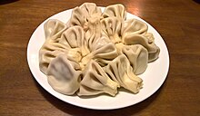

<!DOCTYPE html>
<html lang="en">
<head>
    <title>my favourite food</title>
</head>
<body>
    
</body>
</html>
<p><strong>The fillings of khinkali vary with the area. The original recipe, the so-called khevsuruli, consisted of only minced meat (lamb, beef or pork mixed), onions, chili pepper, salt, and cumin.[3] However, the modern recipe used mostly especially in Georgian urban areas, the so-called kalakuri, uses herbs like parsley and coriander. Mushrooms, potatoes, or cheese may be used in place of meat. Beef or lamb is usual in halal and kosher, which never include pork for religious reasons.</strong></p>

<a href="lesson12.html">click here to go in page 2</a>


<a href="homework.html">click here to go to page3</a>

